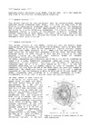

Numerical weather simulations using COSMOiso from Dec 2016 – March 2017 along the ship track of the Antarctic Circumnavigation Expedition

Open access

Datum
2020Typ
- Dataset
ETH Bibliographie
yes
Altmetrics
Abstract
This dataset consists of nine simulations with the isotope-enabled regional numerical weather prediction model COSMOiso, which cover the ship track of the Antarctic Circumnavigation Expedition (ACE) in time and space. The simulations have a spatial resolution of 0.125° (approximately 14 km) and are Mehr anzeigen
Persistenter Link
https://doi.org/10.3929/ethz-b-000445744Externe Links
Beteiligte
Kontaktperson: Thurnherr, Iris
Produzent(in): Thurnherr, Iris
Produzent(in): Aemisegger, Franziska
Produzent(in): Jansing, Lukas
Projektleiter(in): Wernli, Heini
Verlag
ETH ZurichThema
Numerical weather prediction; Numerical weather prediction models; COSMOiso; Antarctic Circumnavigation Expedition (ACE); Stable water isotopes; atmospheric water cycleOrganisationseinheit
02717 - Institut für Atmosphäre und Klima / Inst. Atmospheric and Climate Science
ETH Bibliographie
yes
Altmetrics